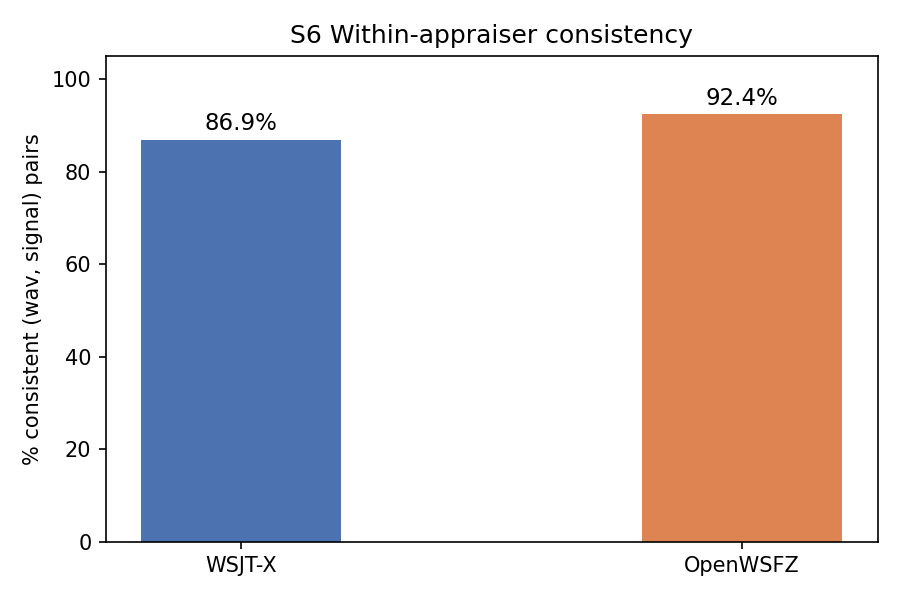
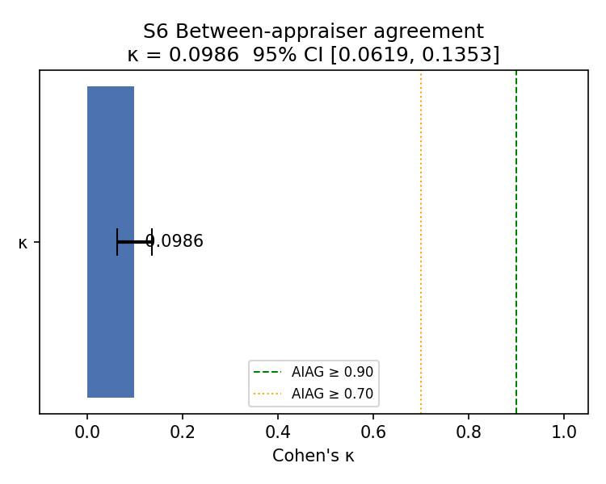
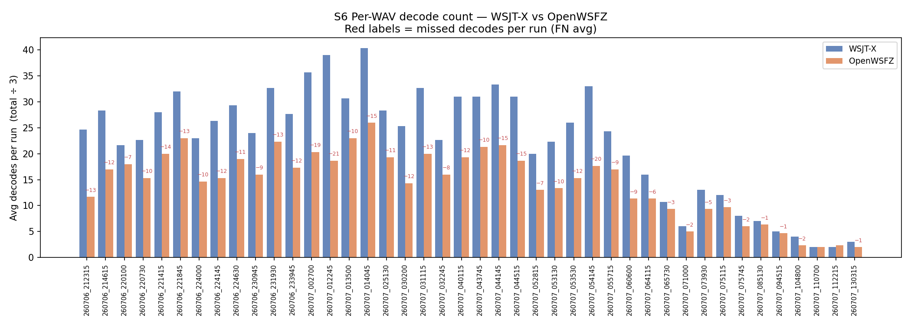
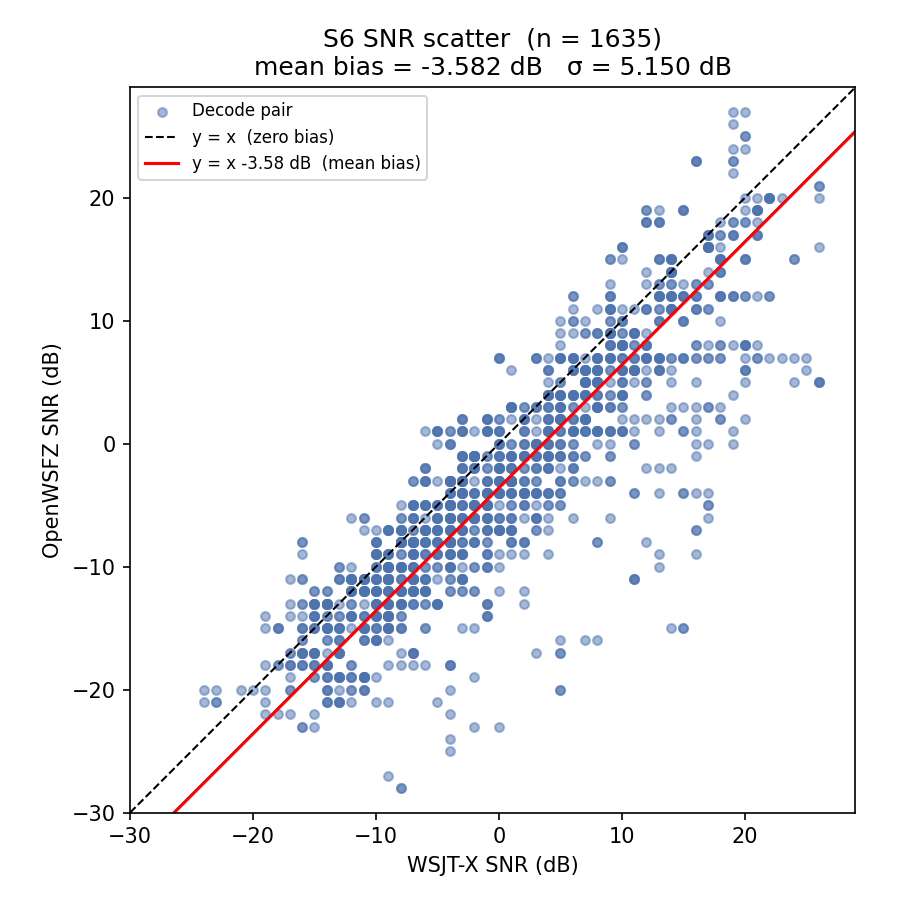

Why this run exists. The last several endurance reports (qa/endurance/2026-07-06-7340e45,
qa/endurance/2026-07-07-bb0a1c4) have repeatedly asserted, without direct measurement, that
"WSJT-X is not an infallible oracle in a live band" whenever OpenWSFZ decodes something WSJT-X
did not — the excess is inferred to be genuine signal recovery from an OSD false-positive rate
model (D-009), never checked against either decoder's own repeatability. Separately,
STUDY-SPEC.md §6.1 already commits to the correct underlying design principle (§2.2, D1:
"WSJT-X is a co-appraiser, not the gold standard") but its S6 scenario had only ever been run
once, on a curated 20 m bench corpus (results/corpus-2026-06-11), and its narrative stated an
expectation — "both decoders are deterministic in monitor mode… Expected: ~100%" — that was
never revisited after that first run quietly returned 93.0%/94.7%, not 100%.
The Captain asked directly: replay a representative sample of WAVs from an existing endurance run through both applications a number of times sufficient for statistical significance, and report a proper repeatability-and-reproducibility (R&R) analysis of both appraisers — not only against each other, but against themselves.
What this run tests, concretely:
This is the second execution of S6 ever, and the first against material drawn from a live endurance-run corpus rather than the original curated bench set, and the first with a continuous ANOVA rather than only attribute (κ) and scalar (mean/σ) SNR statistics.
| Field | Value |
|---|---|
| Run date | 2026-07-11 (harness auto-named the results directory by UTC date, 2026-07-10, since the run started shortly before UTC midnight) |
| OpenWSFZ SHA | f5cba9f (main HEAD at run time) |
| WSJT-X version | WSJT-X 2.7.0 |
| Corpus source | Stratified sample of 42 of the 4,075 WAVs captured live during the 20260706_live_run_2308 endurance session (40 m FT8, 2026-07-06 21:16 UTC – 2026-07-07 14:15 UTC; see qa/endurance/2026-07-07-bb0a1c4/report.md) — not the original 20 m bench corpus used by the first S6 run |
| Sample method | Deterministic, seeded stratified sampling across the four time windows that session's own report already established (evening 21–24 UTC, overnight background 00–05, dawn propagation-shift spike 05–08, midday lull 08–15), 12/12/12/6 files respectively, so the sample covers varied band conditions rather than one. qa/rr-study/select_endurance_sample.py; manifest at results/2026-07-11-owsfz-rerun-sample/sample_manifest.md |
| Runs (K) | 3, independently randomised presentation order per run, crossed design (both apps capture every cycle concurrently via VB-CABLE) — same method as the original S6 (STUDY-SPEC §6.1) |
| Signal universe | Union of all signals decoded by either appraiser in any run |
| Total (WAV, signal, run) observations | 3,270 |
| Variables measured | Decode decision (binary); SNR (dB, matched pairs only, and — new this run — the full balanced part × appraiser × trial cube for signals decoded by both in all 3 runs) |
Operational note: the harness's pre-flight warm-up step (corpus_replay.py) requires an
interactive y/n confirmation, which is incompatible with a backgrounded/non-interactive shell (it
receives EOF and aborts). This run's warm-up was instead verified directly by inspecting both
ALL.TXT files for the injected warm-up message (CQ Q1ABC FN42, confirmed present in both logs
at the correct cycle) before clearing the logs and re-launching with --skip-warmup. No data was
lost; flagged in §5 as a small harness usability gap for future agent-driven runs.
Acceptance thresholds (STUDY-SPEC §10 / NFR-023) — shown as reference points, not a gate for this run. This execution is an investigative repeatability re-run requested directly by the Captain, not a scheduled regression-gate run of S6 against its original bench corpus, so no PASS/FAIL verdict is asserted against these thresholds here. The more meaningful comparison for this run's actual purpose is against the original 2026-06-11 S6 execution (§3.1), which used the same method on different source material.
| Metric | Threshold | Source |
|---|---|---|
| Between-appraiser κ | ≥ 0.90 (PASS) / ≥ 0.70 (conditional) | AIAG attribute study |
| Within-appraiser consistency | ≥ 90% | AIAG attribute study |
| SNR bias (mean delta) | ±2.0 dB | spec §SNR accuracy / D-002 |
| SNR spread (σ of delta) | ≤ 4.0 dB | D-004 acceptance criterion |
| R&R %Study Variation (new, ANOVA) | <10% acceptable / 10–30% conditional / >30% needs improvement | AIAG continuous Gage R&R (§9.1 method) |
A (WAV, signal) pair is consistent if the decode decision is identical across all K runs for that appraiser. This is the direct test of "does the app reproduce itself."
| Appraiser | (WAV, signal) pairs | Consistent | % Consistent | vs. 2026-06-11 bench-corpus run |
|---|---|---|---|---|
| WSJT-X | 1,090 | 947 | 86.9% | 93.0% (933 pairs) |
| OpenWSFZ | 1,090 | 1,007 | 92.4% | 94.7% (933 pairs) |

Neither appraiser is close to the ~100% STUDY-SPEC §6.1 originally expected, and this is now confirmed on two independent corpora, five weeks apart, on different bands (20 m bench corpus vs 40 m live-endurance sample). WSJT-X is the less self-consistent of the two both times (86.9% here, 93.0% originally); OpenWSFZ is more consistent both times (92.4% here, 94.7% originally), though still well short of deterministic. H1 is REJECTED for both appraisers — replaying bit-identical audio through the same analog signal chain three times does not reliably reproduce the same decode decision, for either decoder. This is a genuine finding about signals sitting near each decoder's detection threshold, not a study-execution defect (see §3.5 — no order effect, so it isn't session-state drift).
Landis-Koch (1977) scale: < 0.20 Slight, 0.20–0.40 Fair, 0.40–0.60 Moderate, 0.60–0.80 Substantial, ≥ 0.80 Almost perfect.
κ = 0.0986 (95% CI [0.0619, 0.1353]) — Slight, well below the 0.70 conditional threshold. Consistent with the 2026-06-11 run's κ = 0.0839 — the same "Slight" agreement band, on an entirely different sample. H2 is REJECTED, in line with the already-known D-001 decode gap.
| WSJT-X decoded | WSJT-X not decoded | |
|---|---|---|
| OpenWSFZ decoded | 1,635 (TP) | 184 (FP) |
| OpenWSFZ not decoded | 1,171 (FN) | 280 (TN) |

Informational, matches the parent endurance session's own finding.
OpenWSFZ decoded 1,635 of the 2,806 signals WSJT-X found (58.3% recall) — closely in
line with the parent endurance report's session-wide 56.30% overall recall figure
(qa/endurance/2026-07-07-bb0a1c4/report.md §3.2), confirming the stratified sample is
representative rather than an outlier draw.
| WAV | WSJT-X avg | OpenWSFZ avg | Missed avg | OpenWSFZ rate |
|---|---|---|---|---|
| 260707_012245.wav | 39.0 | 18.7 | 21.3 | 45% |
| 260707_054145.wav | 33.0 | 17.7 | 20.0 | 39% |
| 260707_002700.wav | 35.7 | 20.3 | 18.7 | 48% |
| 260707_044515.wav | 31.0 | 18.7 | 15.3 | 51% |
| 260707_014045.wav | 40.3 | 26.0 | 15.3 | 62% |
| 260707_044145.wav | 33.3 | 21.7 | 14.7 | 56% |
| 260706_221415.wav | 28.0 | 20.0 | 13.7 | 51% |
| 260706_212315.wav | 24.7 | 11.7 | 13.3 | 46% |
| 260707_031115.wav | 32.7 | 20.0 | 13.3 | 59% |
| 260706_231930.wav | 32.7 | 22.3 | 13.3 | 59% |

Mean SNR delta (OpenWSFZ − WSJT-X) = −3.582 dB, σ = 5.150 dB, n = 1,635 matched decode pairs. Both outside the ±2.0 dB / ≤4.0 dB reference thresholds, consistent in direction and rough magnitude with the parent live-run report's own field SNR bias figure (−10.46 dB mean on the full session — different because that figure spans the whole 17-hour session including much weaker-signal content; the sign and "wider than synthetic-bench" pattern match). This scalar summary is exactly why §3.6 below was built: a mean and σ cannot tell us whether the disagreement is one constant offset or something signal-dependent.

No order effect detected for either appraiser (WSJT-X ρ = −0.0924, p = 0.30; OpenWSFZ ρ = −0.0469, p = 0.60) — the §3.1 repeatability shortfall is not session-state drift or warm-up carryover.
Two-way crossed ANOVA with interaction (AIAG Gage R&R method, the same method already ratified for S1 in STUDY-SPEC §9.1), computed on the subset of signals both appraisers decoded in every one of the 3 runs — a balanced part × appraiser × trial cube is required for the sum-of-squares formulas. 515 of the 1,090 candidate (WAV, signal) parts qualified (47.2%); the rest are excluded by construction (a signal missed by either appraiser in any single trial cannot contribute a "same-signal repeated-measurement" data point, which is itself just another expression of the §3.1 repeatability shortfall).
ANOVA table:
| Source | SS | df | MS |
|---|---|---|---|
| Part | 284,728.82 | 514 | 553.947 |
| Appraiser | 9,496.40 | 1 | 9,496.404 |
| Part × Appraiser | 19,774.43 | 514 | 38.472 |
| Repeatability (error) | 578.67 | 2,060 | 0.281 |
| Total | 314,578.32 | 3,089 |
Variance-component breakdown:
| Component | SD (dB) | %Contribution (variance) | %Study Variation |
|---|---|---|---|
| Repeatability (EV) — appraiser vs itself across trials | 0.530 | 0.27% | 5.17% |
| Reproducibility (AV) — flat appraiser-to-appraiser offset | 2.474 | 5.83% | 24.14% |
| Part × Appraiser interaction | 3.568 | 12.12% | 34.81% |
| Reproducibility (total, AV+interaction) | 4.342 | 17.95% | 42.36% |
| R&R (Repeatability + Reproducibility combined) | 4.374 | 18.21% | 42.68% |
| Part-to-part (PV) — genuine signal-to-signal SNR spread | 9.269 | 81.79% | 90.44% |
| Total variation (TV) | 10.249 | 100.00% | 100.00% |
ndc (number of distinct categories) = 2.99. WSJT-X mean 0.783 dB, OpenWSFZ mean −2.724 dB, grand mean −0.971 dB.
This is the key new result of this run. Against the AIAG reference bands (>30% "needs improvement"), the combined measurement system sits at 42.68% %Study Variation — squarely in "needs improvement" territory, consistent with §3.1/§3.2's attribute-level rejection of H1/H2. But the decomposition is the informative part: only 5.17% of study variation is pure repeatability noise (an appraiser's own trial-to-trial wobble is small and, by itself, would be close to acceptable). The dominant term is the Part × Appraiser interaction (34.81%), nearly three times the flat appraiser-to-appraiser offset (24.14%). In plain terms: the two decoders do not disagree by a constant calibration offset that could be corrected with a single shim constant (that was D-002's premise) — they disagree differently depending on which specific signal is being measured. That is precisely the signature you would expect if each decoder's SNR estimate is sensitive, in a signal-dependent way, to exactly the kind of near-threshold, co-channel, or waterfall-congestion conditions already implicated in D-001/D-003/D-004 — not evidence that one decoder is a clean, stable reference and the other is simply "worse."
| Metric | This run | 2026-06-11 bench-corpus run | Verdict (reference thresholds) |
|---|---|---|---|
| Within-appraiser consistency (WSJT-X) | 86.9% | 93.0% | Below 90% both times |
| Within-appraiser consistency (OpenWSFZ) | 92.4% | 94.7% | Above 90% both times, not deterministic |
| Between-appraiser κ | 0.0986 | 0.0839 | "Slight" both times, well below 0.70 |
| OpenWSFZ decode rate vs WSJT-X | 58.3% | — (not reported that run) | Matches parent endurance session (56.3%) |
| SNR bias (mean delta) | −3.582 dB | (S1 synthetic bench: +1.78 dB) | Outside ±2.0 dB reference |
| SNR spread (σ) | 5.150 dB | — | Outside ≤4.0 dB reference |
| R&R %Study Variation (NEW, ANOVA) | 42.68% | not previously computed | "Needs improvement" band; dominated by Part×Appraiser interaction, not flat bias or noise |
Overall: this run reproduces the 2026-06-11 bench-corpus S6 result on an independent, live-drawn 40 m sample — neither appraiser is close to perfectly self-repeatable, and their between-app agreement is low, driven mostly by the known D-001 decode gap. The new ANOVA decomposition adds a mechanism-level answer that neither the original run nor any endurance report has previously produced: the SNR disagreement between the two decoders is not a fixed, correctable offset, it is signal-dependent.
Direct answer to the Captain's original question ("is WSJT-X an infallible oracle?"): No, and this is no longer only an inference from an OSD false-positive rate model — it is now measured directly. WSJT-X's own within-appraiser repeatability (86.9% this run, 93.0% originally) means it does not even reproduce its own decode decisions on identical audio 100% of the time, so it structurally cannot serve as ground truth for a live band. OpenWSFZ is not a clean oracle either (92.4%/94.7% repeatability, also not 100%). Both are noisy measurement instruments operating near their own detection thresholds; the correct framing (already ratified as D1 in STUDY-SPEC §2.2, now with direct field evidence rather than only synthetic-study rationale) is that endurance reports should stop describing OpenWSFZ-only or WSJT-X-only decodes as presumptively "real" or "false" based on which app produced them, and should instead treat any single-decoder-only message as unconfirmed pending a truly independent check (e.g. a completed QSO, or third-party spot corroboration) if that distinction is ever needed again.
corpus_replay.py, _warmup()) to accept a
non-interactive confirmation path (e.g. --yes, or auto-detect the warm-up message in both
ALL.TXT files instead of asking a human) — it currently EOFs and aborts under any
backgrounded/agent-driven invocation, which cost one full restart this run. Low effort, keeps
future agent-run S6 executions from needing the same manual workaround used here.Callsigns scrubbed per NFR-021. Real callsigns replaced with [CALL] before commit. Raw
ALL.TXT snapshots, run_manifest.json, and the sampled WAV corpus copies remain local-only
(git-ignored) — this report and summary.csv/anova_snr.csv/PNGs contain no message text or
callsigns.